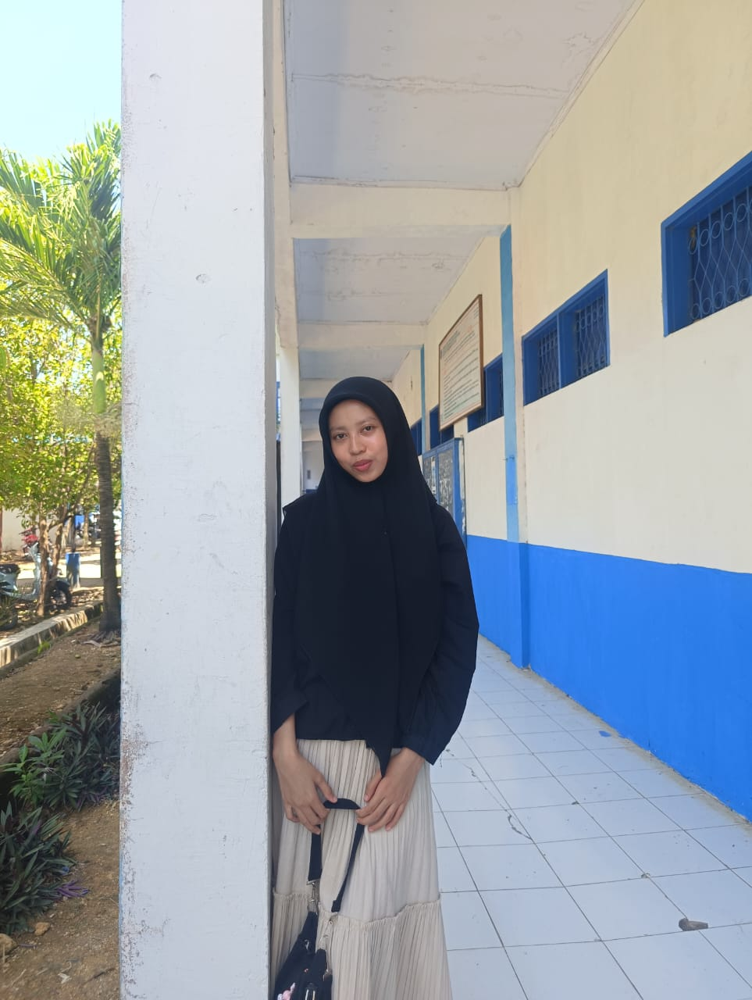

Kenapa harus HTML semantik? oleh Sulistiawati - 08 November 2025 HTML semantik bikin kode lebih mudah dibaca dan ramah mesin pencarian  Struktur semantik yang jelas memudahkan semuanya.
Artikel tentang flexbox dan CSS Grid Oleh Sulistiawati - 8 November 2025 Artikel Ini Menjelaskan tentang flexbox dan CSS Grid
Artikel tentang Keputrian Oleh Sulistiawati - 10 Februari 2025 Artikel Ini Menjelaskan tentang Pentingnya Self-Love dan Batasan Diri: Bagaimana cara mencintai diri sendiri tanpa menjadi egois
Artikel tentang gaya hidup Oleh Sulistiawati - 10 Februari 2025 Artikel Ini Menjelaskan tentang Manajemen Waktu untuk Pelajar/Mahasiswi: Kiat menyeimbangkan kegiatan akademik, organisasi, dan waktu pribadi.